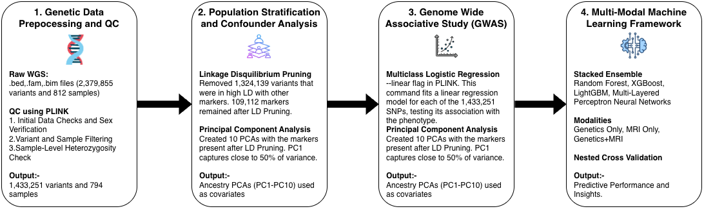
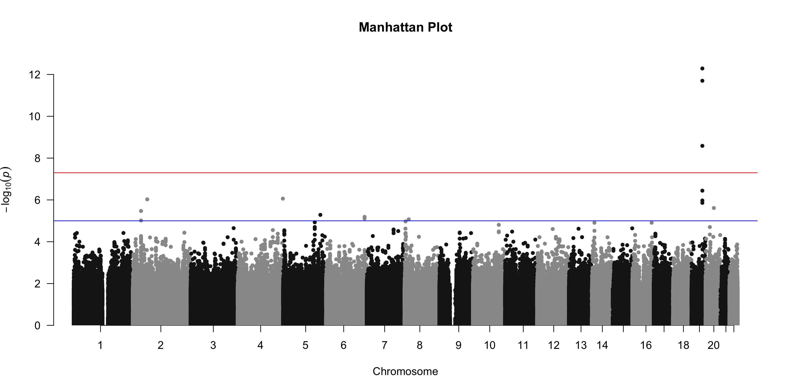
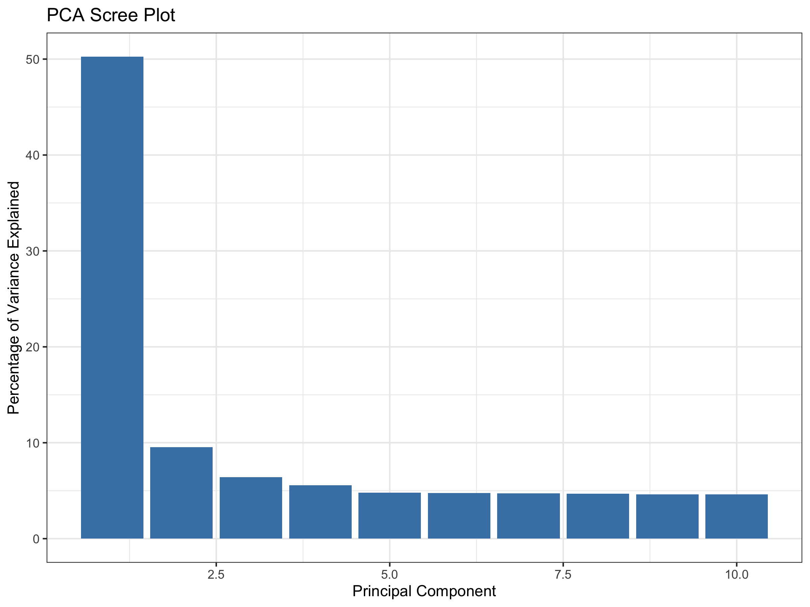
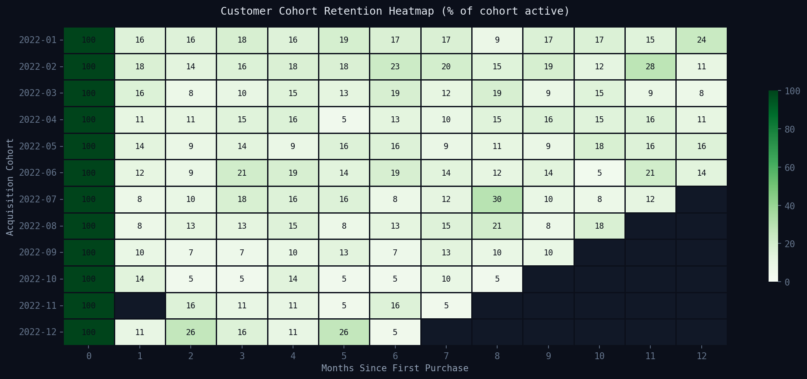
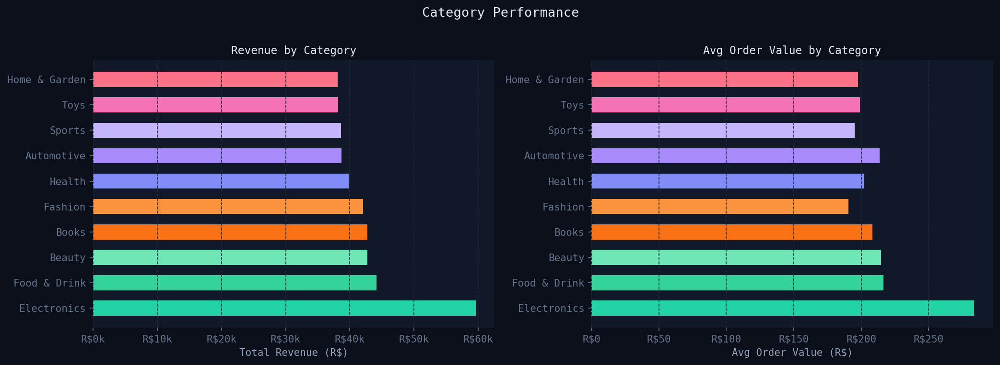
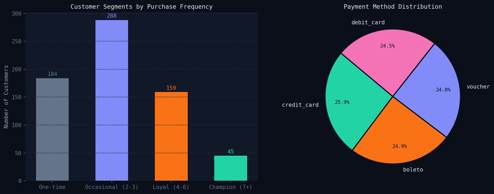
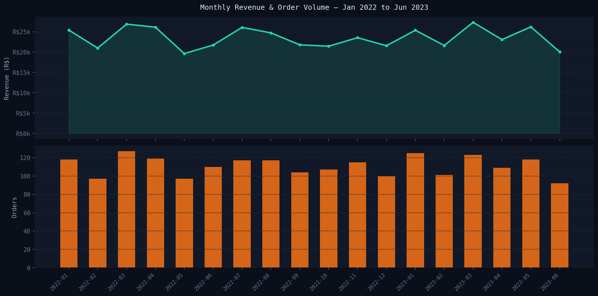
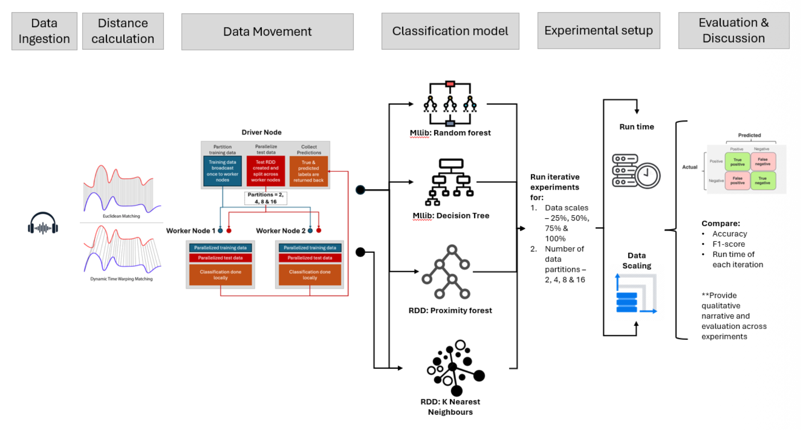
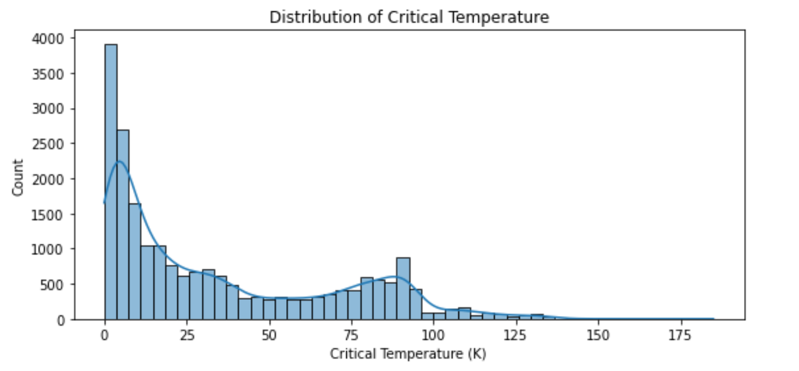

01. Multimodal AI Pipeline for Alzheimer's
Bioinformatics & Ensemble Learning
Built an end-to-end classification pipeline for AD diagnosis using Whole-Genome Sequencing and MRI data.
- 90.4% Balanced Accuracy using a Stacked Super-Learner.
- Processed 1.43M genetic variants with PLINK and PCA.



02. E-Commerce Analytics & Customer Behavior
Business Intelligence & Cohort Analysis
Analyzed 2,000+ orders to drive regional growth and retention strategies.
- Identified that 27.5% of customers are "One-Time" buyers, suggesting a high-potential win-back segment.
- Performed SQL-based performance audits for Category Revenue.




03. Big Data Engine Symptom Detection
Scalable Machine Learning on Spark
Implemented distributed classification for high-frequency engine sensor data on a Spark Cluster.
Key Insight: Proximity Forest provided better scalability compared to DTW-KNN on massive audio time-series datasets by leveraging broadcast variables to minimize data shuffling.

04. Materials Science: Critical Temp Prediction
Predictive Modeling & Feature Engineering
Used Random Forest and XGBoost to predict critical temperatures of 21k+ materials.
- Identified "Valence" and "Thermal Conductivity" as the highest correlating features.
- Achieved superior performance over linear baselines by capturing non-linear atomic interactions.
